.png)
Ce repository contient le code pour entraîner et déployer un modèle de prédiction de la fréquentation des transports en commun de l'agglomération de Rennes (Bretagne, France). Il a été réalisé dans le cadre du projet 10 de la formation Ingénieur IA de l'organisme OpenClassrooms.
Comment faire pour diminuer la saturation en passagers d’un réseau de transports en commun en cas de perturbation du service ? Pour ce faire, il faudrait idéalement être capable de simuler des tests de perturbation du réseau : soit quantitativement en perturbant la fréquence des transports, soit topologiquement en perturbant le tracé des lignes. Ainsi, on serait capable d’évaluer l’effet de chaque perturbation sur la fréquentation. Mais pour pouvoir réaliser ces simulations, il est nécessaire de disposer d’un modèle capable de prédire la demande sur un réseau de transports en commun.
Pour mener à bien le projet, plusieurs jeux de données ont été récupérés.
Les données spatiales ont été découpées en carreaux de 500 mètres de côté, et ont été utilisées afin de reconstruire quatre graphes de dépendance spatiale :

Le modèle répliqué ici est un ST-MGCN (spatiotemporal multigraph convolution network). Ce modèle a été construit pour prédire la demande en passagers par zone, sur des données de VTC à Beijing et Shanghai (Geng et al 2019). L’avantage de cet algorithme repose sur la prise en compte des corrélations spatiales entre zones par convolution sur différents type de graphes de dépendances spatiales : dépendance géographique, dépendance fonctionnelle, et connectivité par les réseaux de transport. Il prend également en compte l’autocorrélation sur la séquence temporelle par un réseau de neurones récurrent.
Les nœuds de ces graphes représentent des régions délimitées de l’espace, et les arêtes différents types de dépendance. L’algorithme attribue un module à chacun des graphes utilisés dans le modèle. Ce module permet de prendre en compte les corrélations spatiales et temporelles dans la prédiction de la demande. Pour ce faire, une couche CG-RNN (contextual-gated recurrent neural network) incorpore l’information du contexte à la modélisation temporelle, grâce à un mécanisme de contrôle contextuel. Au sein d’un module, l’information sortant de la couche CG-RNN passe ensuite par une couche de convolution de graphe d'ordre K. Au terme de la convolution de graphe au sein d’un module, l’information des trois modules est concaténée et agrégée par une fonction d’agrégation (somme, moyenne, maximum, etc.), puis passée par une fonction d’activation. Cette information poolée est la prédiction du graphe.
Le modèle entraîné sur les données de Rennes Métropole vise à prédire la fréquentation dans chaque carreau dans l'heure à venir, en fonction de la fréquentation aux heures précédentes. A cette tâche, le modèle ST-MGCN obtient un score RMSE=50.2 (à comparer à RMSE=184.5 pour un modèle lightGBM).
Ce modèle a été exposé de manière serverless sur une AWS Lambda function, initialement accessible ici. Cette fonction est appelée par un dashboard (sous forme Dash), initialement exposé sur AWS Elastic Beanstalk à cette adresse. Ce dashboard permet à la fois de visualiser les données sur lesquelles le modèle a été entraîné, mais également de faire des prédictions de fréquentation sur le jeu de données test. La prédiction peut se faire : soit sans perturbation, soit en supprimant une connexion entre deux carreaux.
En perspectives de ce travail, deux pistes semblent prioritaires :